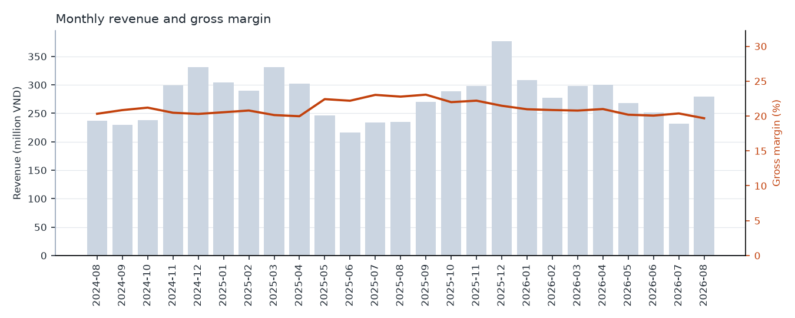
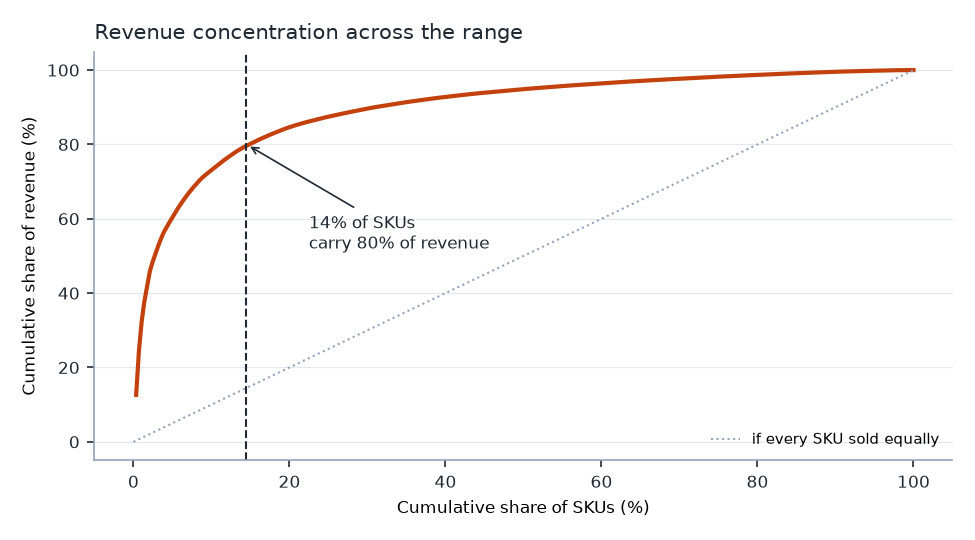
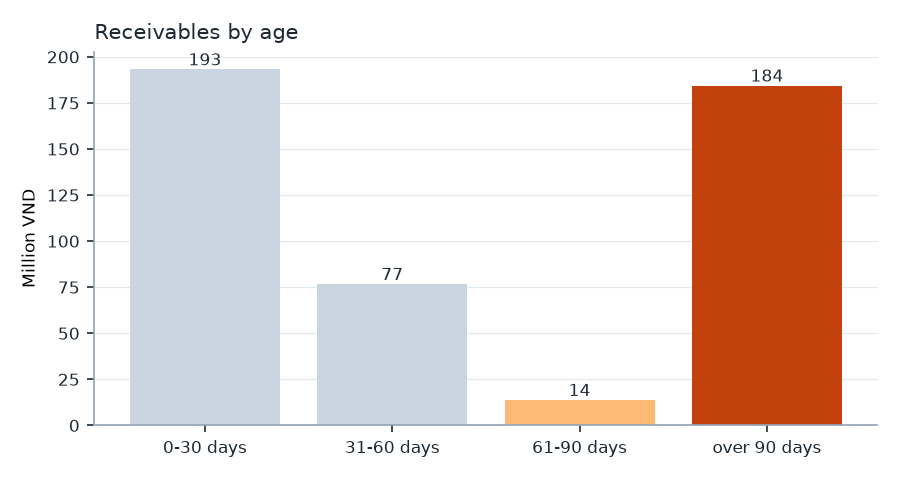

SQL · Business analytics
retail-analytics-sql
Eight analytical queries over a simulated Vietnamese hardware shop — 300 SKUs, 400 customers, 25 months, 8,500 invoices — answering what an owner actually asks: where is the margin going, which stock is dead money, and who owes us. Tám truy vấn phân tích trên dữ liệu mô phỏng một cửa hàng kim khí Việt Nam — 300 mã hàng, 400 khách, 25 tháng, 8.500 hóa đơn — trả lời đúng câu hỏi của chủ tiệm: biên lợi nhuận chảy đi đâu, hàng nào là tiền chết, ai đang nợ.
›Read the case studyĐọc chi tiết
The finding that mattersPhát hiện quan trọng nhất
Discounts given to credit customers drifted from 3.1% to 6.8% over two years. Their gross margin fell from 20.5% to 18.6%. Revenue never dropped — which is exactly why nobody noticed. Recovering two points is worth roughly 44 million VND a year. Chiết khấu cho khách công nợ trôi từ 3,1% lên 6,8% trong hai năm. Biên lợi nhuận gộp của nhóm này giảm từ 20,5% xuống 18,6%. Doanh thu không hề giảm — và đó chính là lý do không ai để ý. Lấy lại hai điểm biên tương đương khoảng 44 triệu đồng mỗi năm.

Revenue holds while margin slides — the pattern that hides an erosion problem. Doanh thu giữ nguyên trong khi biên trượt xuống — kiểu biểu đồ che giấu vấn đề bào mòn.

14% of the range carries 80% of revenue; 27 of those SKUs are below their lead-time demand right now.14% số mã hàng gánh 80% doanh thu; 27 mã trong đó đang dưới mức nhu cầu thời gian chờ hàng.

21 of 122 credit accounts sit above their limit — limits are not enforced where enforcement is possible.21 trong 122 tài khoản công nợ vượt hạn mức — hạn mức không được siết ở đúng nơi có thể siết.
The accounting decisions behind the numbersNhững quyết định kế toán phía sau con số
Most of the work is not SQL syntax — it is deciding what each number is measured against. Cost is FIFO, not average: every sold unit is matched to the delivery batch it came from, because averaging would smear a supplier price rise backwards into months that never paid it, and the erosion above would partly vanish into that average. Revenue is net of both discounts and excludes VAT, which is collected for the state, not earned. Receivables apply cash oldest-invoice-first — assuming payments cleared the newest invoice would make the ageing look far healthier than it is. Phần lớn công việc không nằm ở cú pháp SQL, mà ở việc quyết định mỗi con số được đo dựa trên cái gì. Giá vốn tính FIFO, không phải bình quân: mỗi đơn vị bán ra được truy về đúng lô nhập, vì tính bình quân sẽ trải giá nhập tăng ngược lại vào những tháng chưa hề chịu mức giá đó, và phần bào mòn ở trên sẽ tan một phần vào cái bình quân ấy. Doanh thu trừ cả hai loại chiết khấu và không gồm VAT — VAT là thu hộ nhà nước, không phải doanh thu. Công nợ cấn trừ theo hóa đơn cũ trước — nếu giả định tiền về trả cho hóa đơn mới nhất thì bảng tuổi nợ sẽ đẹp hơn thực tế rất nhiều.
A bug worth rememberingMột lỗi đáng nhớ
The reorder-point query originally computed average daily demand over days with a sale instead of all days — inflating it about thirtyfold. There is now a test that fails if that ever comes back. Truy vấn điểm đặt hàng ban đầu tính nhu cầu bình quân ngày chỉ trên những ngày có bán thay vì mọi ngày — phóng đại khoảng 30 lần. Giờ đã có test báo đỏ nếu lỗi đó quay lại.
Stated up front:Nói rõ từ đầu: the data is simulated, and the README lists every pattern the generator plants on purpose — so nothing here is a surprise I arranged and then "discovered". What is worth reviewing is the SQL, the accounting choices, and the tests. dữ liệu là mô phỏng, và README liệt kê mọi quy luật mà bộ sinh dữ liệu cố tình cài vào — nên không có "phát hiện" nào là do tôi tự dàn dựng rồi tự tìm ra. Cái đáng xem là phần SQL, các lựa chọn kế toán và bộ test.